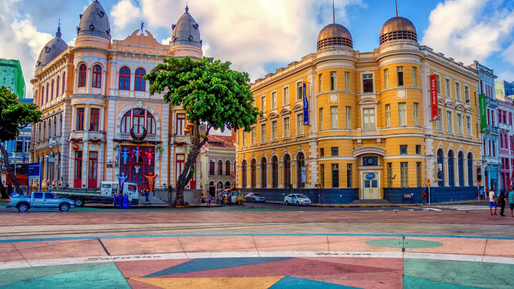

Sobre o Marco Zero
O Marco Zero é um dos pontos turísticos mais emblemáticos do Recife, localizado na Praça do Marco Zero. É considerado o ponto de partida das distâncias para todas as localidades do estado de Pernambuco.

O local é cercado por belas paisagens, incluindo o bairro do Recife Antigo, onde a história e a modernidade se encontram. É um espaço de convivência, onde os visitantes podem apreciar apresentações culturais e feiras de artesanato.
Atrações Próximas
- Teatro de Santa Isabel - Uma das casas de espetáculos mais tradicionais do Brasil.
- Rua do Bom Jesus - Famosa pela sua história e arquitetura colonial.
- Fundação Joaquim Nabuco - Um centro cultural que promove a arte e a educação.
Visite o Marco Zero
Se você está planejando uma visita ao Nordeste, não deixe de passar pelo Marco Zero. É um lugar onde a energia da cidade se manifesta, ideal para fotos e para conhecer mais sobre a rica cultura local.